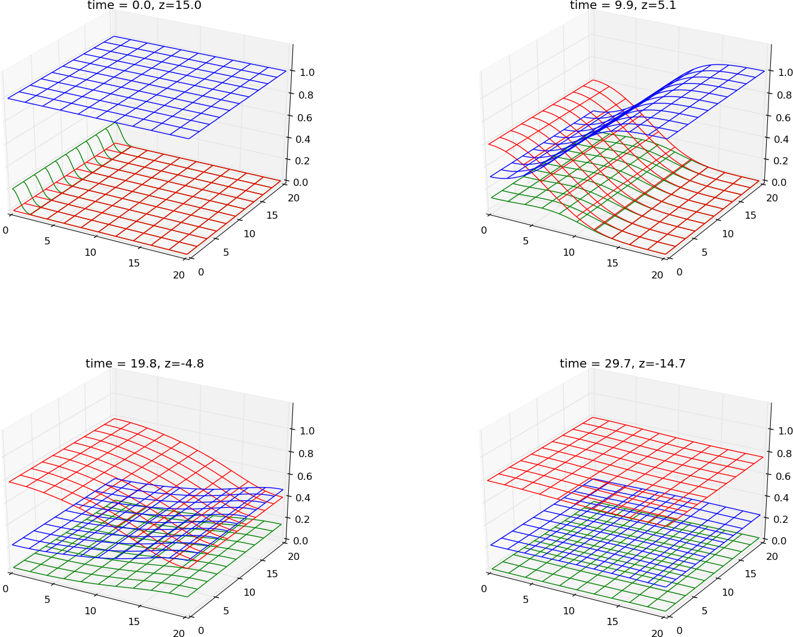
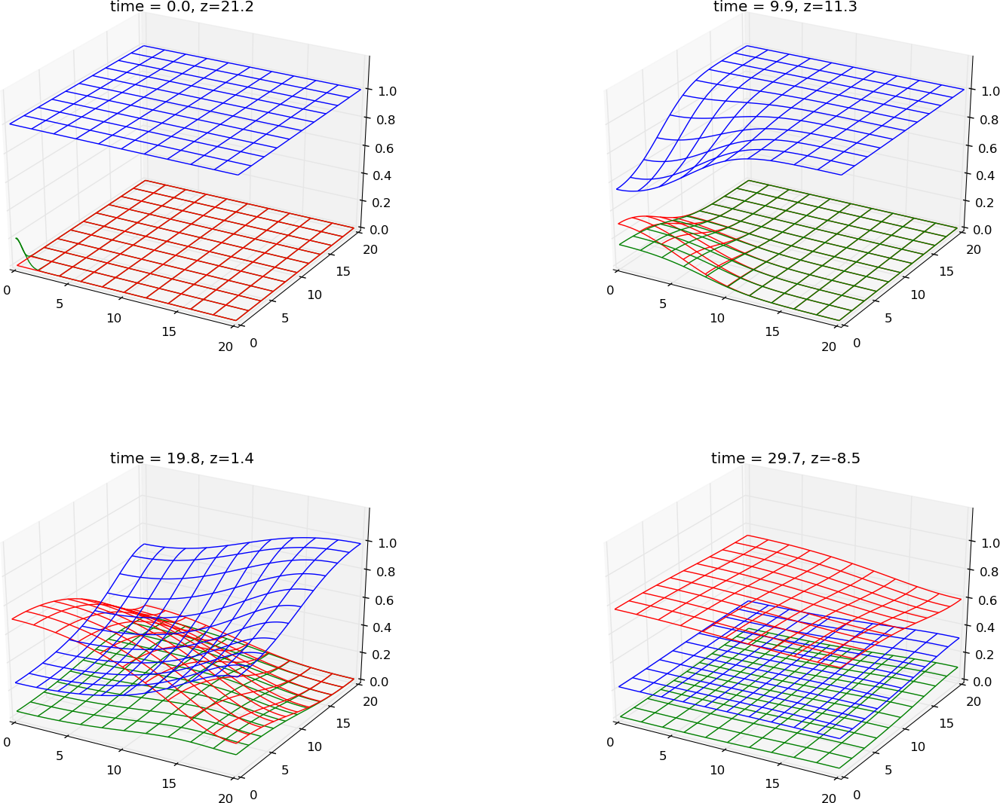
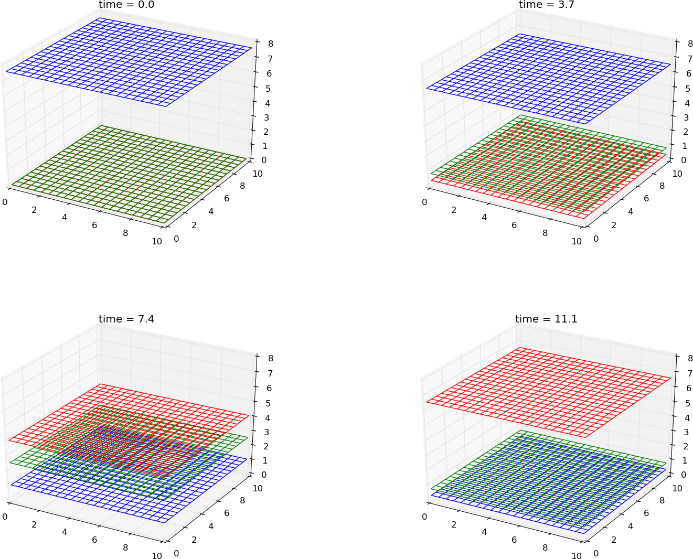
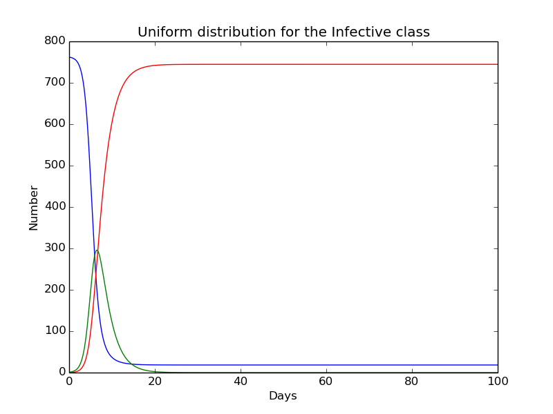
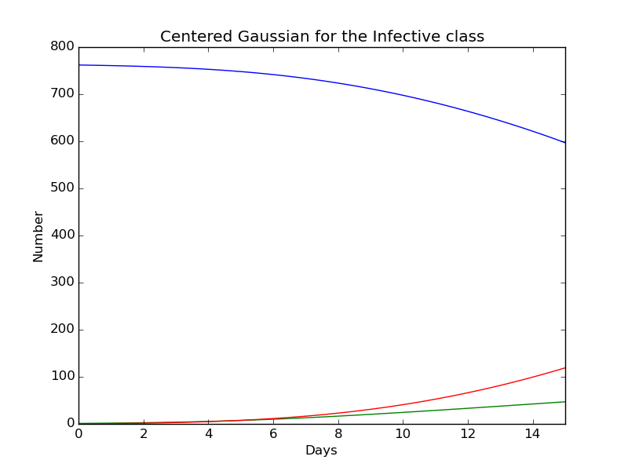
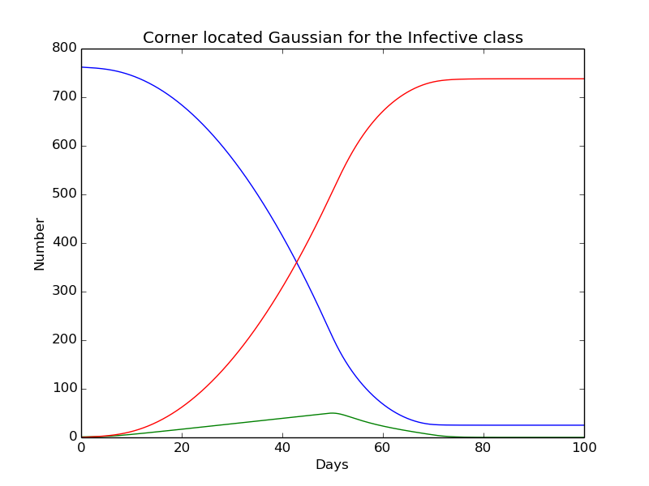
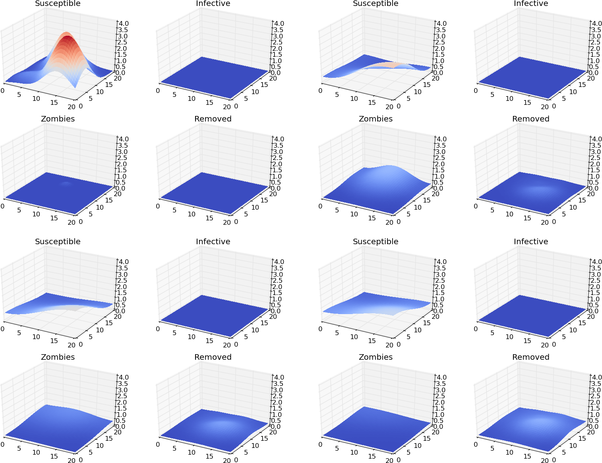
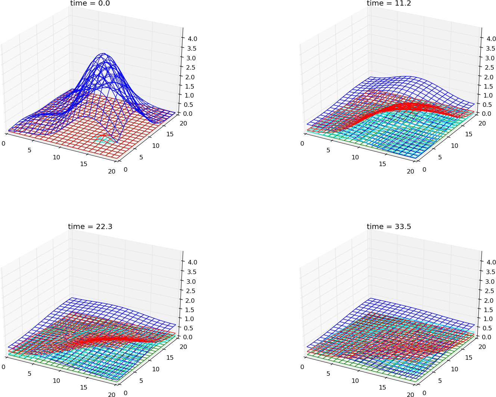

|
|
>>> from sympy import *
>>> x,t,lam = symbols('x t lam')
>>> def s_simple(x,t):
... return cos(pi*x)*t
...
>>> def i_simple(x,t):
... return cos(pi*x)*t
...
>>> def r_simple(x,t):
... return cos(pi*x)*t
...
>>> for x_point in 0,1:
... print "s_x(%s,t): ", % x_point,
>>> for x_point in 0,1:
... print "s_x(%s,t): " % x_point,
... print diff(s_simple(x,t),x).subs(x,x_point).simplify()
... print "i_x(%s,t): " % x_point,
... print diff(i_simple(x,t),x).subs(x,x_point).simplify()
... print "r_x(%s,t): " % x_point,
... print diff(r_simple(x,t),x).subs(x,x_point).simplify()
...
s_x(0,t): 0
i_x(0,t): 0
r_x(0,t): 0
s_x(1,t): 0
i_x(1,t): 0
r_x(1,t): 0
>>> s = s_simple(x,t)
>>> i = i_simple(x,t)
>>> r = r_simple(x,t)
>>> f = diff(s,t)+i*s-diff(diff(s,x),x)
>>> print f.simplify()
(t**2*cos(pi*x) + pi**2*t + 1)*cos(pi*x)
>>> g = diff(i,t)-i*s+lam*i-diff(diff(i,x),x)
>>> print g.simplify()
(lam*t - t**2*cos(pi*x) + pi**2*t + 1)*cos(pi*x)
>>> h = diff(r,t)-lam*i-diff(diff(r,x),x)
>>> print h.simplify()
(-lam*t + pi**2*t + 1)*cos(pi*x)
Figure 13: The PDE system (4) simulated for a 2D system with \( \lambda=0.5 \). A gauss wave from \( x=0 \).

Figure 14: A gaussian function from \( x=0,y=0 \) based on the PDE system (4) with \( \lambda=0.5 \)







Figure 15: Creates the same results as for the ODE system




|
|